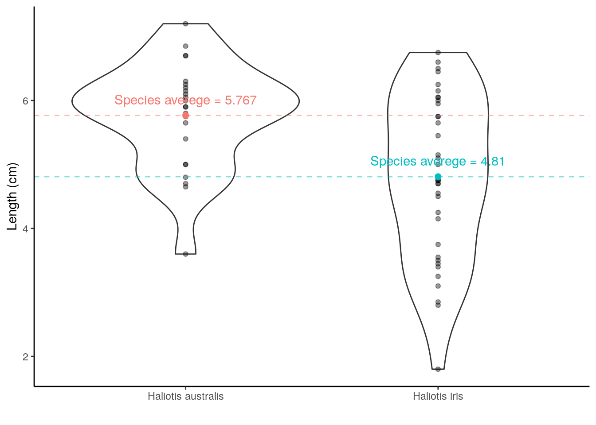
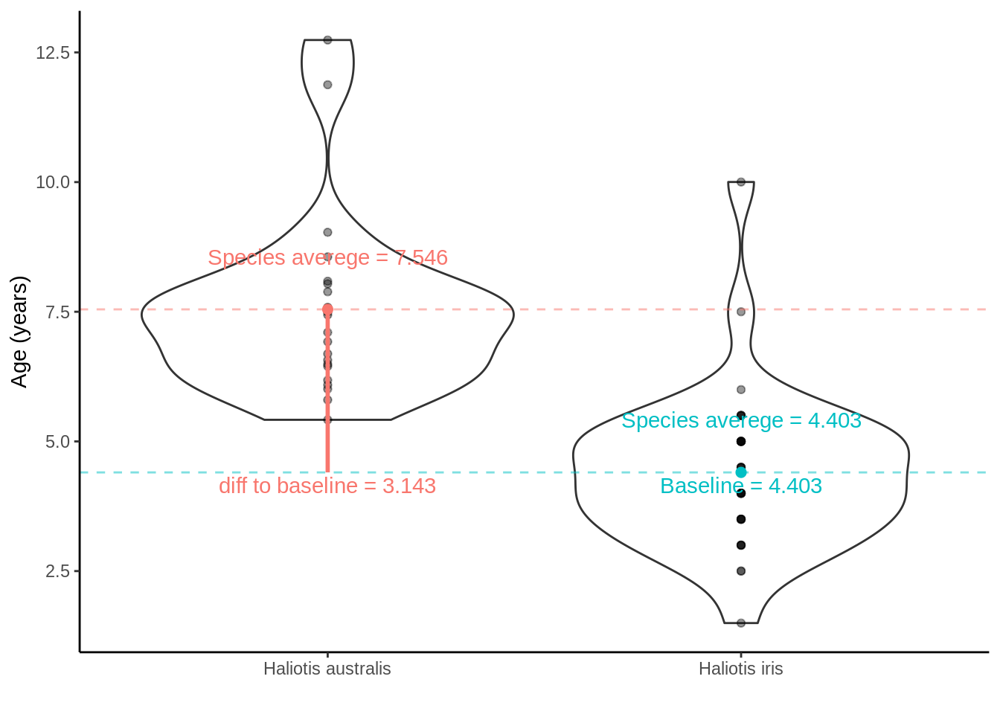

3 Hypothesis testing and introduction to linear regression
3.1 Learning objectives
- Formulate a question/hypothesis to investigate based on the given data
- Use an appropriate visualization or other summary to motivate and communicate your hypothesis
- Explain and discuss the limitations of different hypothesis testing techniques (e.g., single and two-sample t-tests, ANOVA, randomisation test)
- Explain and discuss the limitations of statistical linear regression
- with a single factor explanatory variable
- Interpret and communicate the estimated coefficients to both a statistical and non-statistical audience
- Describe the aims of the following hypothesis tests
- one-sample t-test
- two-sample t-test (independent and dependent)
- randomization test
- one-way Analysis of Variance (ANOVA)
- List the aims of hypothesis testing and write out the appropriate null and alternative hypothesis using statistical notation
- Write R code to carry out an hypothesis test using the appropriate variables in their dataset. Specifically write R code to carry out
- one-sample t-test
- two-sample t-test (independent and dependent)
- randomization test
- one-way Analysis of Variance (ANOVA)
- Interpret and communicate the findings of an hypothesis test accurately and concisely
- List the limitations of the hypothesis in relation to the questions posed by the data
- State in terms of probability statements the meaning of the power and significance level of an hypothesis test
3.2 Hypothesis testing
Using the paua.csv data from CANVAS
3.2.1 The P\(\overline{\text{a}}\)ua dataset
The P\(\overline{\text{a}}\)ua dataset contains the following variables
- Age of P\(\overline{\text{a}}\)ua in years (calculated from counting rings in the cone)
- Length of P\(\overline{\text{a}}\)ua shell in centimeters
- Species of P\(\overline{\text{a}}\)ua: Haliotis iris (typically found in NZ) and Haliotis australis (less commonly found in NZ)
library(tidyverse)
paua <- read_csv("paua.csv")3.2.2 One-Sample t-test
Do we believe that the average length of P\(\overline{\text{a}}\)ua shells is 5cm? Well from our sample the average length is 5.192cm ... But what about variation?
Enter the Standard Error of the Mean, SEM (*reflects our uncertainty about the mean) \(= \frac{\sigma}{\sqrt{n}}\); where \(\sigma = \sqrt{\frac{\Sigma_{i = 1}^n(x_i - \bar{x})^2}{n-1}}\) (\(i = 1,...,n\)) is the standard deviation of the sample, \(n\) is the sample size, and \(\bar{x}\) is the sample mean.
3.2.2.1 Calculating \((x_i - \bar{x})^2\)

In R
sem <- paua %>% summarise(mean = mean(Length),
sem = sd(Length)/sqrt(length(Length)))
sem## # A tibble: 1 x 2
## mean sem
## <dbl> <dbl>
## 1 5.19 0.1553.2.3 Visualising the uncertainty

3.2.3.1 Why error bars that are \(\pm\) twice the SEM?
This is approx. the 95% confidence interval for the population mean
The exact 95% CI is given by + Mean \(\pm\) \(t_{df,1 - \alpha/2}\) \(\times\) SEM ( df = degrees of freedom; \(\alpha\) = level of significance)
Each mean has its own confidence interval whose width depends on the SEM for that mean
When the df (*more on these later) are large (e.g. 30 or greater) and \(\alpha\) = 0.05 \(t_{df,1 - \alpha/2}\) = \(t_{large,0.975}\) \(\approx\) 2
Hence, the 95% confidence interval for the population mean is approximately Mean ± 2 \(\pm\) SEM
So carrying out the test \(H_0: \mu = 5\) vs \(H_1: \mu \neq 5\)
The t-statistic is calculated as follow: \(\frac{\bar{x}- \mu}{\text{SEM}}\) = \(\frac{5.1925 - 5}{0.155351}\) = 1.239
\(\bar{x}\) is the sample mean \(\mu\) is the theoretical value
We can compute the p-value corresponding to the absolute value of the t-test statistics (|t|) for the degrees of freedom (df): df = \(n − 1 = 60 - 1 = 59\).
Using R
t.test(paua$Length, mu = 5 )##
## One Sample t-test
##
## data: paua$Length
## t = 1.2391, df = 59, p-value = 0.2202
## alternative hypothesis: true mean is not equal to 5
## 95 percent confidence interval:
## 4.881643 5.503357
## sample estimates:
## mean of x
## 5.1925The p-vale gives the probability that under our null hypothesis we observe anything as least as extreme as what we did. This probability is \(\sim\) 22%. Do you think what we've observed is likely under the null hypothesis?
Does this plot help?

3.2.4 Differences between two means
means <- paua %>% group_by(Species) %>% summarise(means = mean(Age))
## violin plot with transparent points
a <- ggplot(paua,aes(x = Species, y = Age)) +
geom_violin() +
geom_point(alpha = 0.4) +
ylab("Age (years)") + xlab("") +
theme_classic() +
geom_point(data = means, aes(x = Species, y = means, color = Species), size = 2) +
geom_hline(data = means, aes(yintercept = means, color = Species), lty = 2, alpha = 0.5) +
theme(legend.position = "none") +
geom_text(data = means, aes(x = Species, y = means + 1, label = paste0("Species averege = ",round(means,3)), color = Species))
a 
Calculating the differences between species means:
Haliotis australis average - Haliotis iris average = \(\mu_{\text{Haliotis australis}} - \mu_{\text{Haliotis iris}}\) = 7.546 - 4.403 = 3.143.
Doesn't really tell us much. The average values are all well and good... but... variation? Recall the SEM from the one-sample t-test? The same idea holds here, although the calculation is a little bit more complicated (as we have to think about the number of observations in each group). But from the two group SEMs we can calculate the Standard Error of the Difference between two means, SED.
3.2.4.1 Independent samples t-test with lm() and t.test()
Null hypothesis: \(H_0\) (are on average the same age) verses the alternative hypothesis, \(H_1\), that they aren't!
- \(H_0: \mu_{\text{Haliotis iris}} - \mu_{\text{Haliotis australis}} = 0\) vs \(H_1: \mu_{\text{Haliotis iris}} \neq \mu_{\text{Haliotis australis}}\)
Test Statistic: t-statistic = \(\frac{\bar{x}_{\text{difference}} - \mu}{\text{SED}}\) = \(\frac{\bar{x}_{\text{difference}} - 0}{\text{SED}}\) =
where \(\bar{x}_{\text{difference}}\) is the differences between the species` averages.
Probability of getting a t-statistic at least as extreme as the one we observe (more on this later)
test <- t.test(Age ~ Species, data = paua)
test##
## Welch Two Sample t-test
##
## data: Age by Species
## t = 7.2777, df = 44.807, p-value = 4.051e-09
## alternative hypothesis: true difference in means is not equal to 0
## 95 percent confidence interval:
## 2.273123 4.013024
## sample estimates:
## mean in group Haliotis australis mean in group Haliotis iris
## 7.545939 4.402866t.lm <- lm(Age ~ Species, data = paua)
summary(t.lm)##
## Call:
## lm(formula = Age ~ Species, data = paua)
##
## Residuals:
## Min 1Q Median 3Q Max
## -2.9050 -0.9227 -0.0752 0.5973 5.5988
##
## Coefficients:
## Estimate Std. Error t value Pr(>|t|)
## (Intercept) 7.5459 0.3256 23.174 < 2e-16 ***
## SpeciesHaliotis iris -3.1431 0.4204 -7.477 4.63e-10 ***
## ---
## Signif. codes: 0 '***' 0.001 '**' 0.01 '*' 0.05 '.' 0.1 ' ' 1
##
## Residual standard error: 1.595 on 58 degrees of freedom
## Multiple R-squared: 0.4908, Adjusted R-squared: 0.482
## F-statistic: 55.9 on 1 and 58 DF, p-value: 4.631e-10
## changing the baseline
## it's the ordering that makes the difference
paua_rl <- paua %>% mutate(Species = fct_relevel(Species, "Haliotis iris", "Haliotis australis"))
c.lm <- lm(Age ~ Species, data = paua_rl)
summary(c.lm)##
## Call:
## lm(formula = Age ~ Species, data = paua_rl)
##
## Residuals:
## Min 1Q Median 3Q Max
## -2.9050 -0.9227 -0.0752 0.5973 5.5988
##
## Coefficients:
## Estimate Std. Error t value Pr(>|t|)
## (Intercept) 4.4029 0.2659 16.560 < 2e-16 ***
## SpeciesHaliotis australis 3.1431 0.4204 7.477 4.63e-10 ***
## ---
## Signif. codes: 0 '***' 0.001 '**' 0.01 '*' 0.05 '.' 0.1 ' ' 1
##
## Residual standard error: 1.595 on 58 degrees of freedom
## Multiple R-squared: 0.4908, Adjusted R-squared: 0.482
## F-statistic: 55.9 on 1 and 58 DF, p-value: 4.631e-10
3.2.4.2 Inference lm()
summary(c.lm)$coef## Estimate Std. Error t value Pr(>|t|)
## (Intercept) 4.402866 0.2658700 16.56022 1.190603e-23
## SpeciesHaliotis australis 3.143073 0.4203774 7.47679 4.630689e-10(Intercept) = \(\mu_\text{Haliotis iris}\) = 4.4028662
SE of (Intercept) = SE of \(\mu_\text{Haliotis iris}\) = SEM = 0.26587
\(\text{SpeciesHaliotis australis}\) = \(\mu_\text{Haliotis australis}\) – \(\mu_\text{Haliotis iris}\) = 3.1430733
SE of \(\text{SpeciesHaliotis australis}\) = SE of (\(\mu_\text{Haliotis australis}\) – \(\mu_\text{Haliotis iris}\) ) = SED = 0.4203774
Hypotheses being tested
- The t value and Pr (>|t|) are the t - and p-value for testing the null hypotheses:
- Mean abundance is zero for Haliotis iris (not interested in this really)
- No difference between the population means of Haliotis iris and Haliotis australis
3.2.4.3 Randomization test
The basic approach to randomization tests is straightforward:
- Decide on a metric to measure the effect in question (e.g., differences between group means)
- Calculate that test statistic on the observed data. Note this metric can be anything you wish
- For chosen number of times (i.e.,
nrepsbelow)- Shuffle the data labels
- Calculate the test statistic for the reshuffled data and retain
- Calculate the proportion of times your reshuffeled statistics equal or exceed the observed
- typically here we use the absolute values as we'd be carrying out a two-tailed test
- this is the probability of such an extreme result under the null
- Reject or retain the null on the basis of this probability.
Randomization Test on Two Independent Samples
Do average lengths differ between Species?
means <- paua %>% group_by(Species) %>% summarise(means = mean(Length))
ggplot(paua,aes(x = Species, y = Length)) +
geom_violin() +
geom_point(alpha = 0.4) +
ylab("Length (cms)") + xlab("") +
theme_classic() +
geom_point(data = means, aes(x = Species, y = means, color = Species), size = 2) +
geom_hline(data = means, aes(yintercept = means, color = Species), lty = 2, alpha = 0.5) +
theme(legend.position = "none") +
geom_text(data = means, aes(x = Species, y = means + 1, label = paste0("Species averege = ",round(means,3)), color = Species))
ggplot(paua,aes(x = Length, fill = Species)) +
geom_histogram(position = "identity", alpha = 0.3) +
xlab("Length (cms)") + ylab("") +
theme_classic()## `stat_bin()` using `bins = 30`. Pick better value with `binwidth`.But because the data are skewed and we've likely got non-constant variances we be better off adopting a randomization test, rather than a parametric t-test
## observed differences in means
diff_in_means <- (paua %>% group_by(Species) %>% summarise(mean = mean(Length)) %>% summarise(diff = diff(mean)))$diff
diff_in_means## [1] -0.9569444## Number of times I want to randomise
nreps <- 1000
## initialize empty array to hold results
randomisation_difference_mean <- numeric(nreps)
set.seed(1234) ## *****Remove this line for actual analyses*****
## This means that each run with produce the same results and
## agree with the printout that I show.
for (i in 1:nreps) {
## the observations
data <- data.frame(value = paua$Length)
## randomise labels
data$random_labels <-sample(paua$Species, replace = FALSE)
## randomised differences in mean
randomisation_difference_mean[i] <- (data %>% group_by(random_labels) %>% summarise(mean = mean(value)) %>% summarise(diff = diff(mean)))$diff
}
## results
results <- data.frame(randomisation_difference_mean = randomisation_difference_mean)Interpreting p-values for a randomisation test
## How many randomised differences in means are as least as extreme as the one we observed
## absolute value as dealing with two tailed
n_exceed <- sum(abs(results$randomisation_difference_mean) >= abs(diff_in_means))
n_exceed## [1] 1## proportion
n_exceed/nreps## [1] 0.001ggplot(results, aes(x = randomisation_difference_mean)) +
geom_histogram() +
theme_classic() + ylab("") + xlab("Differences between randomised group means") +
geom_vline(xintercept = diff_in_means, col = "cyan4", size = 1,alpha = 0.6) +
annotate(geom = 'text', label = "Observed difference between means" ,
x = -Inf, y = Inf, hjust = 0, vjust = 1.5, color = "cyan4")## `stat_bin()` using `bins = 30`. Pick better value with `binwidth`.How would the parametirc t-test have served?
t.test(Length ~ Species, data = paua)##
## Welch Two Sample t-test
##
## data: Length by Species
## t = 3.5404, df = 57.955, p-value = 0.0007957
## alternative hypothesis: true difference in means is not equal to 0
## 95 percent confidence interval:
## 0.4158802 1.4980086
## sample estimates:
## mean in group Haliotis australis mean in group Haliotis iris
## 5.766667 4.809722Not too different after all
- In experimental situations a large p-value (large tail proportion) means that the luck of the randomisation quite often produces group differences as large or even larger than what we’ve got in our data.
- A small p-value means that the luck of the randomisation draw hardly ever produces group differences as large as we’ve got in our data.
- Statistical significance does not imply practical significance.
- Statistical significance says nothing about the size of treatment differences. To estimate the sizes of differences you need confidence intervals.
NOTE: We can extend the randomization test to make inference about any sample statistic (not just the mean)
3.3 Power, Significance, and multiple comparisons
Recall, we have two competing hypotheses (claims) relating to the true vale of some population characteristic (e.g., the population mean, denoted \(\mu\)):
Type I error (false positive): declare a difference (i.e., reject \(H_0\)) when there is no difference (i.e. \(H_0\) is true). Risk of the Type I error is determined by the level of significance (which we set!) (i.e., \(\alpha =\text{ P(Type I error)} = \text{P(false positive)}\).

Artwork by @allison_horst
Type II error (false negative): difference not declared (i.e., \(H_0\) not rejected) when there is a difference (i.e., \(H_0\) is false). Let \(\beta =\) P(do not reject \(H_0\) when \(H_0\) is false); so, \(1-\beta\) = P(reject \(H_0\) when \(H_0\) is false) = P(a true positive), which is the statistical power of the test.

Artwork by @allison_horst
Significance level = probability of a Type I error = probability of finding an effect that is not there (false positive).
Power: the probability that the test correctly rejects the null hypothesis when the alternative hypothesis is true. probability of finding an effect that is there = 1 - probability of a Type II error (false negative).
Reducing the chance of a Type I error increases the chance of a Type II error. They are inversely related. Type II error rate is determined by a combination of the following.
- Effect size (size of difference, of biological significance) between the true population parameters
- Experimental error variance
- Sample size
- Choice of Type I error rate (\(\alpha\))
Each time we carry out a hypothesis test the probability we get a false positive result (Type I error) is given by \(\alpha\) (the level of significance we choose).
When we have multiple comparisons to make we should then control the Type I error rate across the entire family of tests under consideration, i.e., control the Family-Wise Error Rate (FWER); this ensures that the risk of making at least one Type I error among the family of comparisons in the experiment is \(\alpha\).
3.4 One way ANOVA (ANalysis Of VAriance) using lm()
Key assumptions of Analysis of Variance
Observations are independent
- Check experiment description
- How were data collected?
All observations have the same variance
- Spread of the observations does not depend on the Treatment Mean
All observations are (approximately) normally distributed.
Remember the penguins?

fit.lm <- lm(bill_length_mm ~ species, data = penguins)
summary(fit.lm)##
## Call:
## lm(formula = bill_length_mm ~ species, data = penguins)
##
## Residuals:
## Min 1Q Median 3Q Max
## -7.9338 -2.2049 0.0086 2.0662 12.0951
##
## Coefficients:
## Estimate Std. Error t value Pr(>|t|)
## (Intercept) 38.7914 0.2409 161.05 <2e-16 ***
## speciesChinstrap 10.0424 0.4323 23.23 <2e-16 ***
## speciesGentoo 8.7135 0.3595 24.24 <2e-16 ***
## ---
## Signif. codes: 0 '***' 0.001 '**' 0.01 '*' 0.05 '.' 0.1 ' ' 1
##
## Residual standard error: 2.96 on 339 degrees of freedom
## (2 observations deleted due to missingness)
## Multiple R-squared: 0.7078, Adjusted R-squared: 0.7061
## F-statistic: 410.6 on 2 and 339 DF, p-value: < 2.2e-16Taking species Adelie as the baseline..
Which pairs of means are different?
- Pair-wise comparisons of means
- Use two-sample t-tests
- We need to calculate our observed t-value where \(\text{t-value} = \frac{\text{Sample Difference}_{ij} - \text{Difference assuming } H_0 \text{ is true}_{ij}}{\text{SE of } \text{Sample Difference}_{ij}}\) where \(\text{Sample Difference}_{ij}\) = Difference between pair of sample means
- Compute the p-value for observed t-value
summary(fit.lm)$coef## Estimate Std. Error t value Pr(>|t|)
## (Intercept) 38.791391 0.2408694 161.04737 2.470328e-322
## speciesChinstrap 10.042433 0.4322643 23.23216 4.232862e-72
## speciesGentoo 8.713487 0.3595046 24.23749 5.330682e-76(Intercept) = \(\text{mean}_{\text{Adelie}}\) = 38.7913907
SE of (Intercept) = SE of \(\text{mean}_{\text{Adelie}\) = SEM = 38.7913907
\(\text{speciesChinstrap}\) = \(\text{mean}_{\text{Chinstrap}}\) - \(\text{mean}_{\text{Adelie}}\) = 10.0424328
SE of \(\text{speciesChinstrap}\) = SE of (\(\text{mean}_{\text{Chinstrap}}\) - \(\text{mean}_{\text{Adelie}}\) ) = SED = 0.4322643
What is \(\text{mean}_{\text{Gentoo}}\) - \(\text{mean}_{\text{Adelie}}\)
Hypotheses being tested
- The t value and Pr (>|t|) are the t - and p-value for testing the null hypotheses:
- Mean abundance is zero for Adelie population
- No difference between the population means of Chinstrap and Adelie
- No difference between the population means of Gentoo and Adelie
We’re interested in 2 and 3, but not necessarily 1!
3.4.1 Model diagnostics and data transformations
Observations are independent
- Check experiment description
- How were data collected?
All observations have the same variance
- Spread of the observations does not depend on the Treatment Mean
All observations are (approximately) normally distributed.
Residual plot to evaluate homogeneity of variances assumption
Plot residuals against the estimated values of the treatment means (Predicted Values)
If the variability of the observations around the treatment means differs between groups, this will be reflected in the residual plot
resids <- data.frame(Residuals = residuals(fit.lm))
# Extract predicted (fitted) values and add to the data frame
resids$Fitted.Values <- fitted.values(fit.lm)
Other diagnostic plots
gglm::gglm(fit.lm) # Plot the four main diagnostic plots## Warning in simpleLoess(y, x, w, span, degree = degree, parametric =
## parametric, : pseudoinverse used at 38.741## Warning in simpleLoess(y, x, w, span, degree = degree, parametric =
## parametric, : neighborhood radius 8.7637## Warning in simpleLoess(y, x, w, span, degree = degree, parametric =
## parametric, : reciprocal condition number 3.8046e-30## Warning in simpleLoess(y, x, w, span, degree = degree, parametric =
## parametric, : There are other near singularities as well. 101.86## Warning in simpleLoess(y, x, w, span, degree = degree, parametric =
## parametric, : pseudoinverse used at 0.0065821## Warning in simpleLoess(y, x, w, span, degree = degree, parametric =
## parametric, : neighborhood radius 0.001548## Warning in simpleLoess(y, x, w, span, degree = degree, parametric =
## parametric, : reciprocal condition number 1.3674e-15## Warning in simpleLoess(y, x, w, span, degree = degree, parametric =
## parametric, : There are other near singularities as well. 6.5996e-05
QQplot
- Normal quantile-quantile (QQ) plot
• Plot sorted residuals versus expected order statistics from a standard normal distribution
Samples should be close to a line
Points moving away from 45 degree line at the tails suggest the data are from a skewed distribution, but it is difficult to be confident with so few data points
Outliers: Causes
- Errors in collecting and/or recording of data
- Mistakes in technique
- Treatment and/or environment
- Affect statistical inference
- Inflation of estimated experimental error variance
- Influence estimate of treatment mean
- Investigate cause before discarding data
- Discarded data results in loss of information
Looking for outliers with residuals
- Large positive or negative values far removed from the 1-to-1 line in the normal QQ plot
- Points far removed from upper and lower boundaries of the Residuals versus Predicted values plot
Variance stabilizing transformations
- Used to change the scale of the observations
- To conform more closely with the ANOVA assumptions
- To provide more valid inferences from ANOVA
- Significance levels (\(\alpha\)) don't apply to original data
- Conduct analysis and make all inferences on transformed
- Present summary tables on the original measurement scale
3.5 😱 p-values 😱 (more to come)
"Good statistical practice, as an essential component of good scientific practice, emphasizes principles of good study design and conduct, a variety of numerical and graphical summaries of data, understanding of the phenomenon under study, interpretation of results in context, complete reporting and proper logical and quantitative understanding of what data summaries mean. No single index should substitute for scientific reasoning."
**What is a p-Value?**Informally, a p-value is the probability under a specified statistical model that a statistical summary of the data (e.g., the sample mean difference between two compared groups) would be equal to or more extreme than its observed value
p-values can indicate how incompatible the data are with a specified statistical model
p-values do not measure the probability that the studied hypothesis is true, or the probability that the data were produced by random chance alone
scientific conclusions and business or policy decisions should not be based only on whether a p-value passes a specific threshold
roper inference requires full reporting and transparency
p-value, or statistical significance, does not measure the size of an effect or the importance of a result
by itself, a p-value does not provide a good measure of evidence regarding a model or hypothesis
Example
Two-sample t -tests for pairwise comparisons of means: $ : t value = Estimate ÷ Std.Error = 23.23; Pr (>|t|) = <2e-16
3.6 Other resources: optional but recommended
- Teacups, giraffes, and statistics: free online introductory level R and statistics modules
I thought it could be helpful to have a thread on ANOVA in R. As a statistical consultant, this is the most frequent FAQ I get from clients - how to run a linear model on their data, conduct hypothesis tests, extract predicted means and perform contrasts.
— We are R-Ladies (@WeAreRLadies) February 2, 2020- The ASA Statement on p-Values: Context, Process, and Purpose